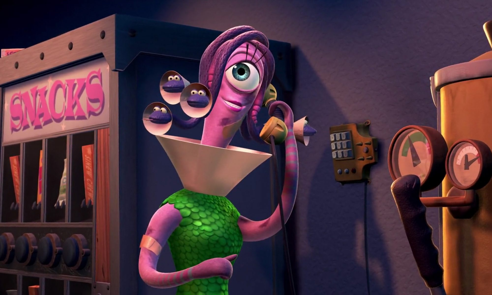

About Celia
Celia is the receptionist at Monsters, Inc., which means she takes calls by monsters and may click buttons for monster voicemail.
Celia's characteristics
- she may have an explosive temper when angered.
- The snakes that make up her hair do not speak, but express their emotions with sounds they make.
- Celia has one thing in common with her boyfriend: they both have one eye.
Celia's boyfriend
Mike Wazowski is Celia's boyfriend. Celia often calls Mike "Googley Bear" and "Googley Woogley" calls Sulley "Sulley-Wulley", Mike often calls her "Schmoopsie-poo" and Sulley, in return, calls her "Celia-Weelia". Click on the link below to read more about Mike: